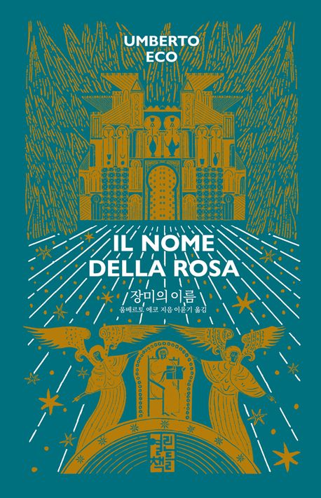

이달의책
이번 달에 새로 나온 책들 중 당신의 취향에 맞는 책을
선별하여 추천해 드립니다.
이달의책
이번 달에 새로 나온 책들 중 당신의 취향에 맞는 책을
선별하여 추천해 드립니다.
“디 에센셜: 장미의 이름”
움베르토 에코 ㅣ 양장본
우리 시대에 가장 영향력 있는 사상가 중의 한 사람이자 베스트셀러 작가인 움베르토 에코의 소설 데뷔작 『장미의 이름』은 1980년 출간 이후 현재까지 2천만 부 이상이 팔리면서 20세기 후반의 문학계가 생산해 낸 최고의 걸작이라는 찬사를 받았다.
현대 사회의 위기를 소설로 그려 보고 싶다는 생각을 갖고 있던 에코는 출판사에 근무하는 연인으로부터 추리 소설을 써보지 않겠느냐는 권유를 받고 집필에 들어가 2년 반 만에 불후의 걸작을 탄생시킨다.
『장미의 이름』은 당대 최고의 지식인이 추리 소설이라는 장르에 바치는 하나의 찬사이자, 그 자체로 완벽한 본격 추리 소설이다. 1981년에 스트레가상, 1982년에 메디치상을 받았고, 1999년에는 프랑크푸르트 도서전 선정 〈20세기의 기억할 명저〉로 꼽혔다.
14세기 무렵, 시자 아드소는 영국의 수도자 배스커빌의 윌리엄과 함께 이탈리아의 한 수도원에 도착한다. 서로 대립하고 있는 두 성직자 무리가 이곳에서 가질 회합 때문에 온 두 사람은 뜻밖에도 참혹한 살인 사건과 맞닥뜨린다. 수도원장으로부터 사건을 해결해 달라는 요청을 받은 윌리엄은 아드소와 함께 사건의 실마리를 좇는다.
그러나 두 사람의 노력에도 불구하고 「요한의 묵시록」 속 예언을 재현하는 듯이 수도사들이 잇달아 기이한 죽음을 맞이한다. 두 사람이 머무른 7일간, 과연 둘은 이 기묘한 죽음의 비밀을 풀 수 있을까.